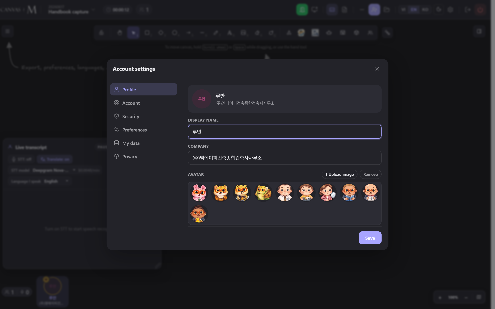

Backgrounds & quality
Two different backgrounds live in Canvas M, and they are easy to confuse. One dresses your dashboard desk with a wallpaper; the other replaces or blurs what sits behind you on camera during a meeting. This chapter walks through both, plus the video-quality ceiling that decides how sharp your camera looks to everyone else. Every setting here is a per-browser cosmetic choice: it lives on this device, survives a reload, and is never synced to your account.
Two backgrounds, two homes
The word “background” means two distinct things in Canvas M, and they are set in two different places. Knowing which is which saves a lot of hunting.
Dashboard wallpaper is the image or gradient painted behind
the glass panes of your lobby — the home screen where your
meetings and projects live. You change it from the small
image button in the lobby header (its tooltip reads
Hình nền). It affects only what you see on your
own desk; nobody else is touched.
Camera background
is the blur or scene that replaces the real room behind you in
your outgoing camera feed during a meeting. Everyone in
the call sees it. You set it from
Account settings → Preferences, under
Change / blur background. Below it sits
Video quality, which controls how crisp that same camera
feed is.
Wallpaper is for your eyes only. Camera background and quality are what the room sees.
All three preferences are stored in this browser’s local storage, not on your account. Sign in on another computer and you start from the defaults again. This is by design — they are purely cosmetic.
Set your lobby wallpaper
- On your dashboard, find the small picture icon in the lobby header (next to the notification bell). Its label is Hình nền (“Wallpaper”).
- Click it. A small glass popover titled Hình nền opens with a grid of tiles.
- Click any tile to apply it instantly — the desk repaints behind the panes as you click. The active tile shows a highlighted border.
- To use your own picture, click the last tile, Tải ảnh lên (“Upload image”), and choose an image file. Canvas M resizes and compresses it before saving.
- To go back to the plain glass desk, click the Mặc định (“Default”) tile, or click the small × on your uploaded tile.
- Click anywhere outside the popover to close it.
→ Your chosen wallpaper paints behind the glass and is remembered on this browser. The image renders sharp — the frosted look comes from the glass panes in front of it, not from blurring the photo.
Labels in this picker are in Vietnamese regardless of your interface language — this small lobby control is not yet translated.
The wallpaper choices
Default — the plain Glass-Desk gradient, no image.
Forest mist — a soft photographic preset.
Crystal leaves — a photographic preset.
Olive champagne — a dark low-chroma gradient.
Pastel day — a bright low-chroma gradient.
Upload your own — becomes “Ảnh của bạn” (Your image) once set, with an × to remove.
Pick a photographic preset for warmth, a gradient for a calm low-distraction desk, or upload a company image. The two gradients are tuned so the glass panes stay readable on top.
Blur or replace your camera background
- Open Your profile from the meeting header (the gear / avatar control), which opens the Account settings modal.
- Click the Preferences tab in the left rail.
- Scroll to Change / blur background. You’ll see a row of chips and a row of scene thumbnails.
- Click No background for the raw camera, or a Blur chip — Light, Medium, or Strong — for progressively heavier blur.
- Or click a scene thumbnail — Forest mist, Crystal leaves, or Office — to drop yourself in front of that image.
- Only one choice is ever active (it’s a single radio group); the active chip or thumbnail is highlighted.
→ If your camera is already on, the effect applies immediately on your live feed. If your camera is off, the choice is saved and applied automatically the next time you turn the camera on — and it survives reloads.
Background effects run only on desktop browsers. On a phone or tablet the whole section is disabled and shows the note “Background effects are only supported on desktop”. Switch to a laptop or desktop if you need a virtual background.

There is no host control to force or clear anyone’s camera background. It is each participant’s own per-browser choice; a host cannot blur you for you.
Every camera-background state
The raw camera — your real room is shown. The default.
A gentle blur — the room is still readable behind you.
A stronger blur — shapes only, details lost.
Maximum blur — the room is fully obscured.
Scene replacement — you appear in front of the chosen image.
On phone/tablet web the section is greyed out with the desktop-only note.
Use a Blur level when you just want to hide a messy or private room while keeping a natural look; use a scene when you want a consistent, on-brand backdrop. Start with Light or Medium — Strong can look heavy on a busy room.
Video quality ceiling
| Choice | What it does | Capture sent |
|---|---|---|
| Auto | Rides the admin-allowed cap and lets the network adapt below it. The default. | Up to the cap |
| Low | Caps your outgoing camera at the lowest tier — kindest to a weak connection and CPU. | 640×360 · 20 fps |
| Medium | A middle ground between sharpness and bandwidth. | 960×540 · 25 fps |
| High | The crispest outgoing feed — best on a strong connection. | 1280×720 · 30 fps |
Find this under Account settings → Preferences → Video quality. Its hint reads “Adapts to your network; pick your own ceiling.” This is a ceiling, not a fixed level: Canvas M always adapts downward on a weak uplink, so picking High doesn’t guarantee High — it only permits it. Lowering it is the better lever when your video stutters. Like the others, it applies live if your camera is on, else on the next camera-on.
An administrator can set an org-wide cap on the maximum quality anyone may choose. When that cap is below High, the tiers above it are greyed out and a note appears: “Admin caps the max at {level}.” Auto always stays selectable — it simply rides whatever the cap is. A participant cannot raise quality past the admin cap.
Backgrounds & quality troubleshooting
The camera-background section is greyed out — You’re on a phone or tablet — background effects are desktop-only.
Use a desktop or laptop browser; the note “Background effects are only supported on desktop” confirms this. → 6.5
High / Medium quality is greyed out — An administrator lowered the org-wide quality cap below that tier.
Pick a tier at or below the cap, or Auto. The note “Admin caps the max at …” names the limit. → 6.7
Upload fails with “Ảnh quá lớn, chọn ảnh khác” — Even after compression the image won’t fit this browser’s storage (storage is nearly full).
Choose a smaller image, or clear space; presets and gradients always work. → 6.3
Upload fails with “Không đọc được ảnh, chọn ảnh khác” — The chosen file isn’t a readable image.
Pick a standard image file (JPG/PNG/WebP). → 6.3
My background / quality reset after signing in elsewhere — These are per-browser preferences, not synced to your account.
Re-pick them on the new device; the choice then sticks on that browser. → 6.2
Camera background didn’t change while I was already on camera — Rarely the processor fails to swap mid-call; the picker never blocks on it.
Turn the camera off and on — the saved choice re-applies on the next camera-on. → 6.5
If video stutters or freezes, lower Video quality first (try Low) before touching the background — it cuts both bandwidth and CPU, whereas a blur or scene adds a little CPU work.